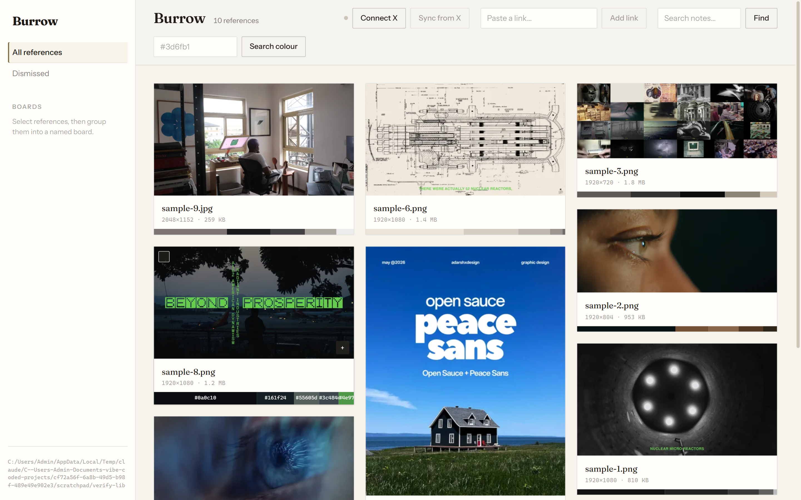

In use
Burrow — reference library
A Tauri app for keeping images and video pulled from bookmarks and pasted links, searchable by the colours in them. The screenshot is the real window, not a mockup.

Serif for what a person wrote. Tile names and notes are Fraunces; dimensions and file sizes are mono. The two are stacked directly on top of each other so the difference does the work no label could.
The palette is permanent. A 10px strip on the bottom edge of every tile, opening to 22px with hex labels on hover. It is what the library searches on, so it is not a hover detail.
The active item is an inset edge, not a filled block. A solid selection bar in a sidebar this pale would be the brightest thing on screen, competing with the grid.
No grayscale. Every strong colour in the window belongs to the references. The chrome contributes paper, ink and one olive edge, which is the entire point.